Über arc42
Diese Dokumentation basiert auf dem arc42-Template und wurde davon abgeleitet (© Dr. Peter Hruschka, Dr. Gernot Starke und Mitwirkende).
Original-Template: https://arc42.org
Lizenz: Creative Commons Attribution-ShareAlike 4.0 International https://creativecommons.org/licenses/by-sa/4.0/
Es wurden Änderungen am originalen arc42-Template vorgenommen.
Dieses angepasste Werk wird unter derselben Creative Commons Attribution-ShareAlike 4.0 International Lizenz bereitgestellt.
Dokumentationsversion: 1.0.0-rc. Draft, 2026-05-12
1. Einführung und Ziele
Dieses Dokument beschreibt das Mont Terri Experiment Information System, kurz MONTEIS. Mit MONTEIS soll ein Zentrales System für das Mont Terri Konsortium von Grund auf neu gebaut werden, welches die Bedürfnisse der Forscher im Bereich der Geologie im Felslabor Mont Terri automatisiert.
1.1. Aufgabenstellung
MONTEIS (Mont Terri Experiment Information System) ist ein neues zentrales Informationssystem für das Mont Terri Felslabor. Es dient der strukturierten Erfassung, Verwaltung und Bereitstellung sämtlicher experimentbezogener Daten aus dem Felslaborumfeld.
Die bestehende Systemlandschaft ist historisch gewachsen, heterogen und technisch fragmentiert. Sie erfüllt die heutigen Anforderungen an Datenvolumen, Datenvielfalt, Nachvollziehbarkeit und langfristige Verfügbarkeit aufgrund veralteter Architekturen nicht mehr ausreichend. Daher wurde im Rahmen einer Vorstudie festgestellt, dass eine komplette Neuentwicklung (Greenfield-Ansatz) eines zentralen Systems notwendig ist.
Ziel der Aufgabenstellung ist die Bereitstellung einer zukunftsfähigen, offenen und modular erweiterbaren Plattform, welche die vollständige Digitalisierung und Integration aller relevanten Datenquellen des Mont Terri Felslabors ermöglicht. Dazu gehören insbesondere experimentbezogene Messdaten, geologische Modelle, Sensordaten sowie wissenschaftliche Dokumente.
Die Dimensionen des Systems sind enorm: Bisher wurden ca. 50 Milliarden Messungen durchgeführt. Täglich kommen mehr als 2 Millionen neue Messungen hinzu. Über die geplante Lebenszeit des Systems wird ein Datenvolumen von mehr als 200 Milliarden Messungen (ca. 10 TB) erwartet.
Das System soll den internationalen Partnern des Mont Terri Konsortiums einen einheitlichen, webbasierten Zugang zu diesen Informationen ermöglichen. Dabei spielt die permanente Datenverfügbarkeit und die georeferenzierte Strukturierung der Daten eine zentrale Rolle.
Zwingende technologische Vorgabe: MONTEIS muss auf 100 % Open-Source-Technologien basieren. Zudem ist der Source-Code zwingend auf GitHub zu publizieren, um maximale Transparenz und eine unabhängige Weiterentwicklung sicherzustellen.
1.2. Qualitätsziele
Die Anforderungen an MONTEIS lassen sich in funktionale und nicht-funktionale Aspekte sowie übergeordnete Qualitätsziele gliedern. Der Schwerpunkt liegt auf dem Umgang mit grossen, heterogenen Datenmengen sowie der langfristigen Sicherstellung von Datenzugriff, Integrität und Systemstabilität.
1.2.1. Zentrale funktionale Anforderungen (Überblick)
Das System muss insbesondere folgende fachliche Fähigkeiten unterstützen:
-
Zentrale Verwaltung von experimentbezogenen Daten über den gesamten Lebenszyklus (teilweise >20 Jahre).
-
Erfassung und Integration heterogener Datenquellen (Sensoren, Zeitreihen, Dokumente, geologische Modelle).
-
Verwaltung von Experimenten, Messstellen und zugehörigen Metadaten.
-
Bereitstellung eines performanten webbasierten Zugriffs, inklusive interaktiver 3D-Ansichten und räumlicher Navigation.
-
Unterstützung der Suche (z. B. Region of Interest-Suche in 2D/3D, Volltext) und Wiederauffindbarkeit von Daten.
-
Automatisierter Import (via Daten-Pipelines) aus bestehenden Datenerfassungssystemen (DAS) wie Geomonitor über FTP oder Kafka.
-
Bereitstellung von Daten für die wissenschaftliche Auswertung über strukturierte Exportfunktionen.
1.2.2. Übergeordnete Qualitätsziele (ISO 25010-orientiert)
Die folgenden Qualitätsziele sind für MONTEIS besonders relevant und wurden mit messbaren Kriterien aus dem Pflichtenheft hinterlegt:
| Nr. | Qualitätsziel | Beschreibung & Messkriterien |
|---|---|---|
1 |
Sicherheit |
Schutz sensibler Forschungsdaten durch rollenbasierte Zugriffskontrolle (RBAC) , sichere Authentifizierung via eIAM und Einhaltung des IKT-Grundschutzes des Bundes. |
2 |
Datenintegrität |
Sicherstellung der verlustfreien Speicherung (absolut kein Datenverlust). Jederzeitige Verfügbarkeit unprozessierter Originaldaten und Speicherung standardmässig in SI-Einheiten. |
3 |
Verfügbarkeit |
Gewährleistung eines hochverfügbaren Systems mit minimalen Ausfallzeiten (gefordert ist eine Downtime von < 2 %). |
4 |
Performanz |
Effiziente interaktive Nutzung (z. B. durch Resampling-Funktionen beim Plotten langer Zeitreihen) , die gewährleistet ist, auch wenn bis zu 30 Benutzer gleichzeitig arbeiten. |
5 |
Skalierbarkeit |
Fähigkeit zur performanten Verarbeitung eines Zielvolumens von über 200 Milliarden Messungen. Die Architektur muss so modular sein, dass Daten-Pipelines unabhängig operieren, ohne das System zu blockieren. |
6 |
Interoperabilität |
Nahtlose Anbindung an Umsysteme (wie BIM, Fulcrum und Citavi) über Schnittstellen. Problemlose Verarbeitung der stark heterogenen Datenformate (TXT, CSV, LAS, PDF etc.). |
7 |
Offenheit & Transparenz |
Konsequente Nutzung von 100 % Open-Source-Komponenten. Publikation des vollständigen Quellcodes auf GitHub. |
8 |
Nachvollziehbarkeit |
Lückenlose Dokumentation von Systemoperationen. Sicherstellung der Verifizierbarkeit bei manuellen Daten-Uploads sowie Nutzung von Zeitstempeln. |
9 |
Benutzerfreundlichkeit |
Intuitive Bedienung im Browser ohne zusätzliche Plugins. Selbstständige Konfigurierbarkeit von Alarmierungen und Dashboards durch die Nutzer. |
1.3. Stakeholder
| Rolle | Kontakt | Erwartungshaltung |
|---|---|---|
Auftraggeberin / Betreiberin |
swisstopo (Landesgeologie) |
Wünscht eine Effizienzsteigerung, automatisierte Validierung, Ablösung veralteter Systeme zur Kostenersparnis und eine Vorreiterrolle durch innovative Open-Source-Technologien. |
Projektpartner & Forscher |
Mont Terri Konsortium (22 Partner, inkl. ENSI, ETH, nagra) |
Benötigen einen performanten, automatisierten Zugang zu den Daten, einfache Wiederauffindbarkeit (z.B. über 3D-Viewer) und Exportmöglichkeiten für wissenschaftliche Auswertungen. |
Administratoren |
swisstopo-interne Mitarbeiter |
Einfache Verwaltung von Benutzerkonten, Systemüberwachung via Cockpit-View, voll konfigurierbare Daten-Pipelines und Alerting-Funktionen. |
2. Randbedingungen
Dieser Abschnitt beschreibt die Vorgaben und Einschränkungen, die bei der Konzeption und Umsetzung von MONTEIS zwingend zu beachten sind. Sie schränken den Lösungsraum für Architekten und Entwickler bewusst ein, um die strategischen und rechtlichen Vorgaben des Bundes und des Mont Terri Konsortiums zu erfüllen.
2.1. Technische Randbedingungen
| Randbedingung | Beschreibung |
|---|---|
100 % Open Source |
Das System, inklusive aller eingebundenen Produkte von Drittanbietern, darf ausschliesslich auf Open-Source-Komponenten basieren. Es dürfen keine Lizenzgebühren für Softwarekomponenten anfallen. |
Cloud-Infrastruktur |
Die neuen Applikationen, Datenbanken und Pipelines müssen zwingend in einer Cloud-Infrastruktur betrieben werden (als Beispiele werden u.a. AWS-Cloud-Services, S3 Buckets, Kubernetes und Docker genannt). |
Zentrales Identity Management |
Die Authentifizierung der Nutzer hat zwingend über eIAM (oder vergleichbare SSO-Provider wie AGOV) der Bundesverwaltung zu erfolgen. |
Browser- und Plugin-Freiheit |
Die Web-App (Frontend) muss auf einer der gängigen Plattformen vollständig im Webbrowser funktionieren, ohne dass zusätzliche Plugins installiert werden müssen. |
Einheiten und Standards |
Sensormesswerte müssen systemintern zwingend in SI-Einheiten abgespeichert und dargestellt werden. Ursprüngliche Einheiten müssen jedoch bei Bedarf weiterhin verfügbar und abrufbar bleiben. |
System-Schnittstellen |
MONTEIS muss zwingend über Schnittstellen (APIs/Pipelines) mit den bereits existierenden Systemen BIM Mont Terri (3D-Geometrien/Infrastruktur), Fulcrum (mobiles Logbuch/Proben) und Citavi (Publikationsdatenbank) interagieren können. |
2.2. Organisatorische Randbedingungen
| Randbedingung | Beschreibung |
|---|---|
Transparenz & Quellcode |
Gemäss Vorgaben der Bundesverwaltung (bzw. EMBAG) muss der gesamte Source-Code der Applikationen auf GitHub publiziert werden und anschliessend für die Öffentlichkeit frei zugänglich sein. |
Agile Methodik & Etappierung |
Die Entwicklung hat strikt nach agilen Software-Entwicklungsmethoden zu erfolgen. Zudem ist ein etappiertes Vorgehen vorgeschrieben: Zuerst wird ein MVP (Priorität 1) entwickelt, gefolgt von optionalen Erweiterungen (Priorität 2 und 3). |
Sprache |
Die Kommunikations-, Applikations-, Daten- und Dokumentationssprache ist zwingend Deutsch. |
Präsenz vor Ort |
Zwar können die Arbeiten primär in den eigenen Räumlichkeiten des Anbieters erfolgen, jedoch wird erwartet, dass der Auftragnehmer regelmässig (voraussichtlich alle 4 Wochen) an Besprechungen in den Räumlichkeiten der Bedarfsstelle (St-Ursanne) teilnimmt. |
2.3. Konventionen und Sicherheitsvorgaben
| Randbedingung | Beschreibung |
|---|---|
IKT-Grundschutz |
Das System muss den obligatorischen minimalen Sicherheitsanforderungen des Bundes bezüglich Informationssicherheit (IKT-Grundschutz) genügen. |
Vollständige Dokumentation |
Das System, die Pipelines und der Code müssen vollständig dokumentiert werden und die Dokumentation muss während der gesamten Auftragsdauer gepflegt und à jour gehalten werden. Änderungen im System müssen nachvollziehbar dokumentiert werden. |
3. Kontextabgrenzung
Dieses Kapitel beschreibt das System in seiner Umgebung. Es grenzt MONTEIS von seinen externen Nachbarsystemen ab und definiert die Schnittstellen und den Datenfluss zu den angebundenen Akteuren und Systemen.
3.1. Fachlicher Kontext
MONTEIS operiert nicht isoliert, sondern agiert als zentrales "Overarching System" (Informationsdrehscheibe) im Felslabor Mont Terri, das Daten aus verschiedenen spezialisierten Systemen bündelt.
Akteure:
-
Administrator (swisstopo): Hat weitreichende Konfigurationsrechte. Er legt neue Experimente und Sensoren an, konfiguriert die Daten-Pipelines, richtet das Alerting ein und muss manuell hochgeladene Daten verifizieren.
-
User (Wissenschaftler, PIs, Projektpartner): Greifen auf das System zu, um Daten über die 3D-Ansicht oder Filter zu suchen, lange Zeitreihen zu plotten, Exporte durchzuführen und Kommentare zu verfassen.
Nachbarsysteme:
| Nachbarsystem | Typ | Fachliche Beschreibung & Informationsfluss |
|---|---|---|
BIM Mont Terri |
3D-Geometrie & Infrastruktur |
Fungiert als digitaler Zwilling des Felslabors (Infrastruktur, Assets und Bohrlochdatenbank). MONTEIS bezieht von hier die 3D-Strukturen und Bohrlochgeometrien, um diese im eigenen 3D-Viewer darzustellen und für die räumliche Suche nutzbar zu machen. |
Fulcrum™ |
Mobiles Logbuch / Vor-Ort-Erfassung |
Cloud-Datenbank zur mobilen Erfassung von Ereignissen, Proben und Bohrlöchern direkt auf Tablets im Tunnel. Da Fulcrum das primäre Arbeits-Tool vor Ort bleibt, müssen Logbuch- und Assetdaten zwingend bidirektional mit MONTEIS abgeglichen werden. |
Citavi |
Publikations- & Berichtsdatenbank |
Verwaltet wissenschaftliche Berichte, technische Notizen und Zeitschriftenartikel. Die darin enthaltenen Dokumente (PDFs) und Metadaten (z. B. Autor, Schlagwörter) werden periodisch in MONTEIS überführt, um sie direkt mit den jeweiligen Experimenten zu verknüpfen. |
DAS (Data Acquisition Systems) |
Sensorik / Datenerfassung |
Lokale Erfassungssysteme (wie Geomonitor, Geoscope, Glötzl etc.), die Millionen von Sensordaten (z. B. Druck, Temperatur) aufzeichnen. Diese Messwerte fliessen kontinuierlich in MONTEIS ein. |
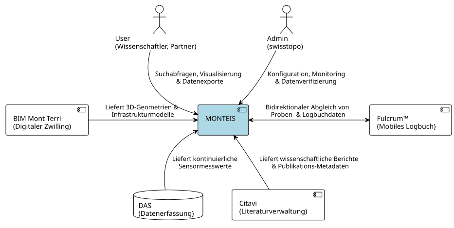
3.2. Technischer Kontext
Die technische Anbindung der Nachbarsysteme an MONTEIS erfolgt über klar definierte, standardisierte Schnittstellen. In dieser Sicht wird MONTEIS als Blackbox betrachtet, die detaillierten API-Spezifikationen (REST-Contracts) werden in der separaten API-Dokumentation (z. B. via Swagger/OpenAPI) gepflegt.
An den Systemgrenzen kommen folgende technische Integrationsmuster zum Einsatz:
-
Daten-Pipelines (Ingestion von DAS): Die Anbindung der lokalen Datenerfassungssysteme (DAS) erfolgt entweder über etablierte Dateitransfer-Protokolle (wie FTP) oder über moderne Event-Streaming-Technologien wie Apache Kafka, welches extrem geringe Latenzen (<10ms) bei hoher Bandbreite für die Hochfrequenz-Sensordaten bietet.
-
Format-Handling an der Systemgrenze: Die eingehenden DAS-Schnittstellen müssen extrem heterogene Dateiformate (TXT, CSV, ASCII, XLS, JPG, TIF, LAS, LAZ, etc.) automatisiert entgegennehmen können.
-
REST-APIs & Webhooks (BIM & Fulcrum): Die Kommunikation mit den Umsystemen BIM und Fulcrum erfolgt über zustandslose REST-APIs, wobei strukturierte Daten im JSON-Format ausgetauscht werden. Für ereignisbasierte Updates (z. B. aus dem mobilen Logbuch Fulcrum) werden zusätzlich Webhooks eingesetzt.
-
Authentifizierungsschnittstelle (eIAM): Das System delegiert die Authentifizierung vollständig nach aussen. Das Login erfolgt über einen externen Call (z. B. via SAML oder OIDC) an das System
eIAModerAGOVder Bundesverwaltung.
Monteis mit Umsysteme
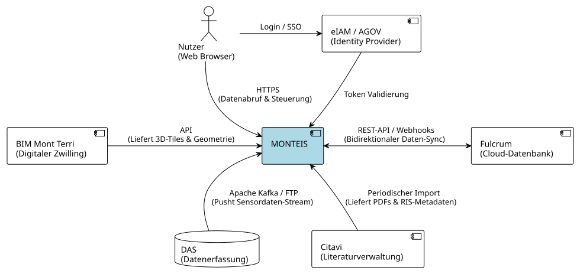
3.3. Mapping fachliche auf technische Schnittstellen
Die folgende Tabelle stellt den Bezug zwischen den ausgetauschten fachlichen Informationen (siehe 3.1) und deren technischer Implementierung (siehe 3.2) her:
| Nachbarsystem | Fachliche Schnittstelle (Das "Was") | Technische Schnittstelle (Das "Wie") |
|---|---|---|
DAS (Datenerfassung) |
Kontinuierlicher Zufluss von rohen Sensormesswerten (z.B. Druck, Temperatur). |
Daten-Stream via Apache Kafka (für Latenzen <10ms) oder Dateitransfer via FTP. |
Fulcrum™ |
Bidirektionaler Abgleich von mobilen Logbucheinträgen, Proben und Asset-Daten. |
Zustandslose Kommunikation via REST-API (Format: JSON) sowie ereignisbasierte Updates über Webhooks. |
BIM Mont Terri |
Bereitstellung der 3D-Infrastrukturgeometrien und Bohrlochdaten des Tunnelsystems. |
Abfrage über eine API (z. B. für Cesium 3D-Tiles zur Visualisierung im Browser). |
Citavi |
Bereitstellung von wissenschaftlichen Berichten (PDFs) und Publikations-Metadaten. |
Kein direkter API-Zugriff möglich; Umsetzung über manuellen oder periodischen Import von Austauschformaten (z. B. RIS und PDF-Dateien). |
eIAM / AGOV |
Sichere Identifikation und Authentifizierung der Nutzer (Admins, Wissenschaftler). |
Externer Aufruf des föderativen Identity Providers der Bundesverwaltung via SAML / OIDC. |
4. Lösungsstrategie
Dieses Kapitel fasst die grundlegenden Entwurfsentscheidungen und Lösungsansätze zusammen, die die Architektur von MONTEIS massgeblich prägen. Es beschreibt, mit welchen technologischen und strukturellen Konzepten die geforderten Qualitätsziele (insbesondere Skalierbarkeit, Performanz und Verfügbarkeit) erreicht werden.
4.1. Erreichung der wichtigsten Qualitätsziele
Die folgende Tabelle gibt einen Überblick (Executive Summary), mit welchen architektonischen Ansätzen und Taktiken die priorisierten Qualitätsziele erreicht werden. Detaillierte technische Beschreibungen folgen in den darauffolgenden Unterkapiteln.
| Qualitätsziel | Szenario | Lösungsansatz & Architekturentscheidung | Link zu Details |
|---|---|---|---|
Performanz & Skalierbarkeit |
Ein Wissenschaftler möchte eine 10-jährige Zeitreihe eines Drucksensors visualisieren. Das System darf nicht einfrieren und muss bei 30 gleichzeitigen Nutzern performant bleiben. |
Polyglot Persistence & Downsampling: Hochfrequente Messwerte (Zielvolumen: 200 Mrd. Messungen) landen in einer spezialisierten TimeScaleDB, Metadaten in PostgreSQL. Für lange Zeitreihen wird systemseitig ein Downsampling angewendet, um die Payload für das Frontend zu reduzieren. |
→ Kap. 5.4 & 6.8 |
Verfügbarkeit & Robustheit |
Ein Datenerfassungssystem (DAS) sendet fehlerhafte oder extrem grosse Datenmengen. Dies darf andere Experimente oder die Web-App nicht beeinträchtigen. |
High Availability & Event-Streaming: Bereitstellung im Kubernetes-Cluster (AWS) mit High-Availability-Images. Apache Kafka (Connect) dient als asynchroner Puffer. Jede DAS-Pipeline operiert strikt isoliert als eigener Pod/Connector, sodass Ausfälle gekapselt bleiben. |
→ Kap. 5.3.2 & 6.1 |
Sicherheit |
Zugriffe auf sensible Experimentdaten müssen strikt geregelt und vor unbefugtem Zugriff geschützt sein. |
Zentrales API-Gateway & RBAC via Keycloak: Direkte Zugriffe auf Pipelines oder Datenbanken sind unterbunden; Frontend und Backend fungieren als Nadelöhr. Die Authentifizierung (eIAM) wird über Keycloak angebunden. Rollen (z. B. |
→ Kap. 5.3.1 & 6.6 |
Datenintegrität |
Historische Sensordaten und deren Umrechnungen müssen manipulationssicher und jederzeit nachvollziehbar gespeichert werden. |
Trennung von Roh- und Prozessdaten: Sensordaten werden direkt und unverfälscht abgelegt. Die Normalisierung erfolgt ausschliesslich in der Pipeline. Ändert sich eine Berechnungsformel, müssen die Daten zwingend über die Pipeline aktualisiert werden. Rohdaten landen parallel in einem S3 Bucket, während das Schema der TimeScaleDB absichtlich schlank gehalten wird. |
→ Kap. 5.3.2 & 6.2 & 6.9 |
Interoperabilität |
Das System muss heterogene Daten aus Umsystemen (BIM, Fulcrum, Citavi) und diversen Sensoren verarbeiten. |
Spezialisierte Backend-Komponenten & Kafka Sinks: Die Anbindung von Umsystemen erfolgt über dedizierte Spring Boot Komponenten. Die Heterogenität der DAS-Sensordaten wird durch das Kafka Connect Cluster abgefangen, welches vielfältige Formate entgegennehmen und standardisieren kann. |
→ Kap. 5.3.2 |
Offenheit & Transparenz |
Das System muss zukunftssicher und ohne Vendor-Lock-in durch Lizenzkosten betrieben werden können. |
100 % Open Source: Alle eingesetzten Komponenten werden auf ihre Open-Source-Lizenz geprüft. Der Source Code wird zentral bei swisstopo auf GitHub geführt und gemanagt. |
→ Kap. 4.3 |
Nachvollziehbarkeit |
Uploads und Systemzustände müssen für Administratoren transparent und auditierbar sein. |
Statusbasierte Ablage: Manuelle Uploads werden zunächst in einem isolierten |
→ Kap. 5.4 & 6.2 |
Benutzerfreundlichkeit |
Nutzer benötigen individuelle Konfigurationsmöglichkeiten und eine intuitive Bedienung. |
User-Centric Design & Customizing: UI-Designs und Workflows werden durch die Anwender validiert. Die Applikation erlaubt es jedem Nutzer, relevante Einstellungen (Alarme, Darstellungeinheiten aus einem definierten Set) individuell zu konfigurieren. |
→ Kap. 5.2 |
4.2. Fundamentale Architekturentscheidungen (Top-Level)
MONTEIS folgt einer verteilten, Cloud-nativen Microservices-orientierten Architektur, die in drei logische und physische Schichten unterteilt ist:
-
Interface Layer: Angular Web-Frontend.
-
Business Layer: Spring Boot Backend und Daten-Pipelines (Kafka Connect).
-
Storage Layer: TimeScaleDB, PostgreSQL, AWS S3 und S3 Glacier.
Entkopplung und Skalierung: Die verschiedenen Schichten und Services werden als separate Pods in einem Kubernetes-Cluster bereitgestellt. Dies ermöglicht eine granulare und individuelle horizontale Skalierung (z. B. Skalierung des Backends bei hohen Zugriffszahlen oder Erhöhung der Pipeline-Pods bei grossen Daten-Uploads). Die Kommunikation zwischen den Layern erfolgt über REST-APIs, während Datenbanken über effizientes Connection Pooling angebunden werden.
4.3. Technologie-Entscheidungen (Tech Stack)
-
Frontend: Die Web-Applikation wird mit Angular umgesetzt, ergänzt durch das Carbon Design System, AG-Grid und Scion Workbench für eine konsistente und moderne UI. Für die komplexe Darstellung der geologischen 3D-Modelle kommt Giro3D zum Einsatz.
-
Backend & API: Als zentrales Verarbeitungssystem dient eine Java Spring Boot Applikation. Jede Datenanfrage oder -eingabe die durch einen User ausgelöst wird, passiert dieses Backend. Einzig die Pipeline kann autonom agieren.
-
Data Pipelines: Die Ingestion der Sensordaten erfolgt über ein Kafka Connect Cluster, gefolgt von spezifischen Java- oder Python-Pods für die weitere Datenverarbeitung. Für Benachrichtigungen wird das AWS Alerting genutzt.
-
Storage-Split: Zur performanten Bewältigung der bis zu 50 TB an Daten kommen vier Speichersysteme zum Einsatz:
-
TimeScaleDB: Für das performante Speichern und Abfragen von Echtzeit-Messpunkten.
-
PostgreSQL (mit PostGIS): Für zugehörige Metadaten und die vollständig georeferenzierte Ablage der Systemhierarchien.
-
AWS S3: Für Dateien aus Umsystemen, manuelle Uploads und die temporäre (24h) Zwischenspeicherung von Rohdaten.
-
AWS S3 Glacier Deep Archive: Für die kosteneffiziente Langzeitarchivierung. Ein täglicher Batch-Job überführt Rohdaten aus dem regulären S3 dorthin.
-
4.4. Integrations- und Schnittstellenstrategie
Isolierung der Pipelines: Um zu verhindern, dass ein fehlerhafter Sensordaten-Feed das System beeinträchtigt, kann das Input-Topic falls nötig mittels Broker vor dem Kafka Connect Cluster in verschiedene Output-Topics (z. B. ein Topic pro Sensor) aufgeteilt werden. Jede DAS-Pipeline verfügt über einen eigenen Connector. Im Extremfall existiert pro Sensor ein eigener Pipeline-Pod. Dies reduziert die zu verarbeitende Datenmenge pro Pod massiv, garantiert höchste Performanz, isoliert Fehler und optimiert die Cloud-Kosten.
3D-Modellierung (IFC-Integration): Anstatt eine aufwändige direkte API-Kopplung für 3D-Modelle zu bauen, stellt MONTEIS dem Administrator eine Upload-Funktion für IFC-Dateien (z. B. aus BIM Mont Terri) zur Verfügung. Diese Modelle werden im Frontend über Giro3D und Three.js nativ in Web-Workern des Browsers gerendert. Dies lagert die Rechenlast auf den Client aus und schützt die Performance der restlichen Web-App.
4.5. Organisatorisches & DevOps
CI/CD & Deployment: Der Entwicklungsprozess stützt sich auf moderne, hochautomatisierte DevOps-Infrastrukturen:
-
Pipelines: Bei jedem Commit wird Code-Formatting und automatisiertes Testing ausgeführt. Merge Requests durchlaufen zudem eine statische Codeanalyse (z. B. SonarQube).
-
Deployment-Flow: Vom
main-Branch erfolgt ein vollautomatisches Deployment auf diedev-Umgebung. Getaggte Versionen werden aufstagingfür das Kunden-Review bereitgestellt. Nach Abnahme wird das getestete Image auf dieprod-Umgebung propagiert. -
Security & Maintenance: Mittels Weekly Builds und Rolling Updates wird das System aktuell gehalten. Container werden kontinuierlich via Trivy oder Dependency-Track gescannt. Für das vereinfachte Abhängigkeits-Management ist der Einsatz von Renovate im Repository vorgesehen.
Open Source Compliance: Es wird prozessual (z. B. durch Lizenz-Scanning in der CI/CD-Pipeline) sichergestellt und dokumentiert, dass jede verwendete Komponente und Bibliothek unter einer anerkannten Open-Source-Lizenz steht.
5. Bausteinsicht
Dieses Kapitel beschreibt die statische Struktur des Systems MONTEIS. Die Bausteinsicht ist hierarchisch aufgebaut: Level 1 beschreibt die groben Architektur-Schichten (Gesamtsystem), Level 2 detailliert die inneren Komponenten und Zugriffslogiken dieser Schichten.
5.1. Whitebox Gesamtsystem (Level 1)
Das System folgt einer strikten 3-Schicht-Architektur. Die Kommunikation zwischen den Layern ist durch eindeutige Zuständigkeiten und gerichtete Datenflüsse geregelt.
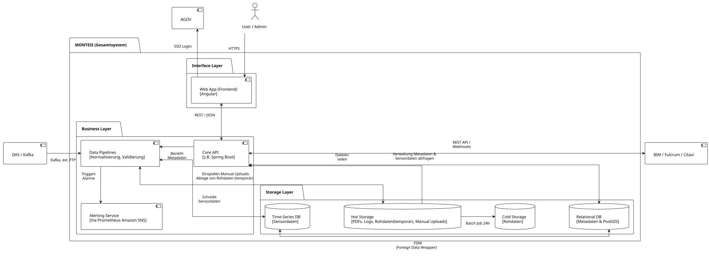
5.1.1. Interface Layer (Frontend)
Stellt die Benutzeroberfläche für Wissenschaftler und Administratoren bereit. Nimmt Benutzerinteraktionen entgegen, visualisiert 3D-Modelle und rendert hochfrequente Zeitreihendiagramme.
5.1.2. Business Layer (Backend & Pipelines)
Das logische Herzstück des Systems. Diese Schicht ist dreigeteilt:
-
Ein synchrones Spring Boot Backend als zentrales API-Gateway und Metadaten-Verwalter.
-
Ein asynchrones Pipeline & Worker-Ökosystem (Kafka-basiert) für die massenhafte Verarbeitung und Speicherung der Sensordaten.
-
Ein Alerting Service für die individuelle Alarmierung mittels AWS SNS (Simple Notification Service).
5.1.3. Storage Layer (Datenbanken & Cloud Storage)
Nutzt den Ansatz der "Polyglot Persistence", um die massiven Datenmengen (Ziel: 200 Mrd. Messungen) performant und kosteneffizient abzulegen. Beinhaltet TimeScaleDB (Zeitreihen), PostgreSQL + PostGIS (Metadaten) sowie AWS S3 (Dateien und Rohdaten) und AWS S3 Glacier (Rohdaten).
5.2. Whitebox Interface Layer (Level 2)
TODO: Draft da die Architektur noch nicht abschliessend gemacht ist
Obwohl die genaue Modulstruktur des Frontends noch in der Spezifikationsphase ist, basiert die Architektur der Web-Applikation auf Angular und dem Carbon Design System. Um die Komplexität der Darstellung zu managen, gliedert sich die UI logisch in folgende Hauptbereiche, die durch die Scion Workbench als Layout-Framework orchestriert werden:
-
3D-Visualisierungs-Modul: Nutzt Giro3D, um die Infrastruktur, Bohrlochgeometrien und Sensoren räumlich im Browser darzustellen, ohne die Performance der restlichen Applikation zu blockieren. Dies Wird erreicht mittels Worker vom Browser selber, damit können wir den Load des Rendering sauber auslagern auf das Client Device.
-
Data-Grid & Dashboard-Modul: Integriert ag-Grid für die hochperformante tabellarische Darstellung und das Plotten der gefilterten Sensor-Zeitreihen.
-
Admin- & Konfigurations-Modul: Schnittstelle für Administratoren zur Verwaltung von Experimenten, Freigabe von manuellen Uploads und Konfiguration von Alarmen.
5.3. Whitebox Business Layer (Level 2)
Der Business Layer besteht aus zwei stark entkoppelten Hauptsystemen: Dem Spring Boot Backend und den Kafka-basierten Daten-Pipelines.
5.3.1. Core API (Spring Boot Backend)
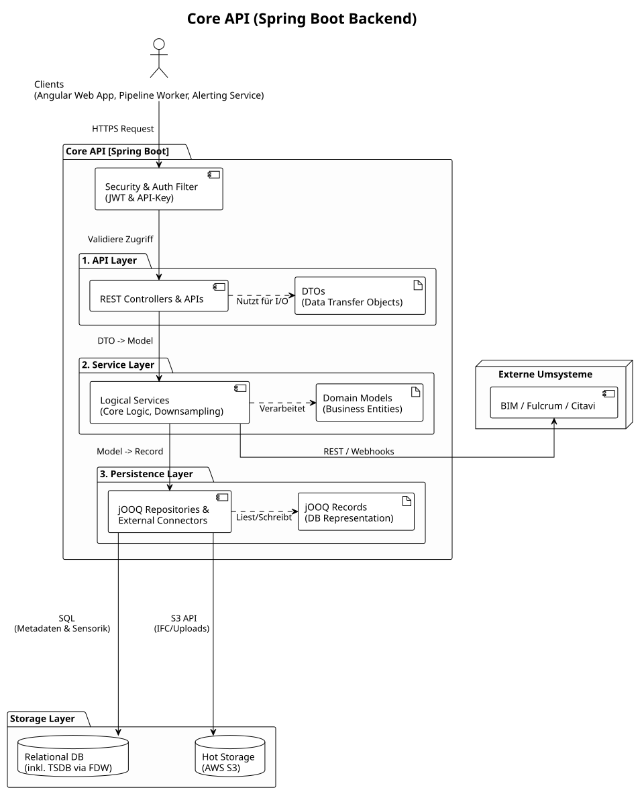
Das Backend fungiert als Dreh- und Angelpunkt für jegliche synchrone Kommunikation. Es beinhaltet folgende logische Services:
-
Security & Auth Filter: Verarbeitet die vom externen Keycloak/eIAM empfangenen JWTs. Über den Spring
@AuthenticatedPrincipal werden die in den Claims enthaltenen Rollen (z. B.read_exp_a) geparst und das RBAC (Role-Based Access Control) auf API-Ebene strikt durchgesetzt. -
Query & Downsampling Service: Ein dedizierter Service, der Leseanfragen an die TimeScaleDB richtet und intelligente Downsampling-Algorithmen anwendet, um die abgerufene Datenmenge vor der Auslieferung an das Frontend zu reduzieren.
-
IFC Upload & Processing Service: Nimmt hochgeladene 3D-Geometrie-Modelle (IFC-Dateien) entgegen und bereitet diese für das Rendering (via Giro3D/Three.js) im Frontend vor.
-
Umsystem-Connectoren: * Fulcrum-Client: Konsumiert die API von Fulcrum für die bidirektionale Synchronisation.
-
Frontend-API: Stellt dem Angular-Client alle benötigten Endpunkte zur Verfügung.
-
Pipeline-API: Ein durch API-Keys gesicherter interner Endpunkt, über den die Pipeline-Worker Metadaten abrufen können.
5.3.2. Data Pipelines & Alerting (Kafka & Worker)
Der Ingestion-Prozess für Sensordaten ist asynchron und ereignisgesteuert aufgebaut. Die Verarbeitung innerhalb eines Pipeline-Worker-Pods folgt einem strikten Ablauf:
-
Format-Parser: Eine neue Nachricht wird vom Kafka-Broker konsumiert und in ein Standard-Objekt (
SensorID,Timestamp,Value) geparst. Genauere details zu dem Standardformat sind in Kapitel 8. -
Metadata Handler: Führt ein Cache-Lookup anhand der
SensorIDdurch. Bei einem Cache-Miss wird das Spring Boot Backend via REST aufgerufen, um die aktuellen Metadaten zum Sensor zu laden. -
SI-Unit Converter: Rechnet den Rohwert anhand einer in den Metadaten hinterlegten Formel (JsonLogic) in die standardisierte SI-Einheit um.
-
Validator & Alerting Handler: Prüft den umgerechneten Wert gegen definierte Upper-/Lower-Bounds. Bei einer Verletzung wird ein Event emittiert. (Hinweis: Architektonische Trennung des Alertings: Grenzwertverletzungen wirft der Worker, System-Alarme wie fehlende Daten werden direkt auf dem Kafka-Topic via Grafana und Amazon SNS überwacht).
-
DB-Writer: Persistiert den finalen Datensatz in die TimeScaleDB, das Format wird in Kapitel 8 definiert.
-
Aggregator (Memory): Der Originaldatensatz wird im Speicher gehalten. Alle n Minuten flusht der Worker die gesammelten Rohdaten direkt in einen AWS S3 Bucket.
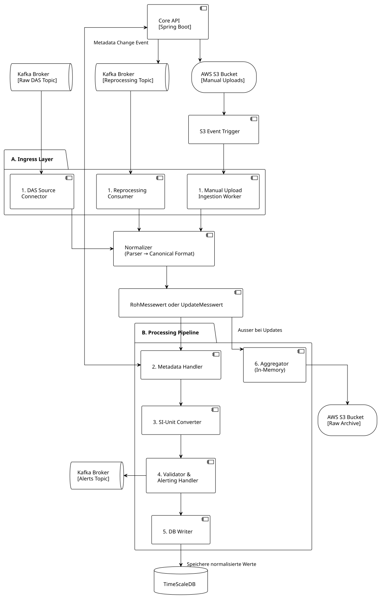
5.3.3. Notification & Alerting Service (Dedizierter Pod)
Um die Core API von ressourcenintensiven Hintergrundaufgaben zu entlasten und Probleme bei horizontaler Skalierung (z. B. doppelter E-Mail-Versand) zu vermeiden, wird das Alerting in einen isolierten Microservice ausgelagert.
-
Zweck/Verantwortung: Zuständig für das dynamische Routing und den Versand von Benachrichtigungen an die Endnutzer.
-
Ablauf & Integration:
-
Als zentrale "Rule Engine" fungiert Grafana, welches Metriken (Prometheus) und Sensordaten (TimeScaleDB) aggregiert und überwacht.
-
Bei Alarm-Auslösung sendet Grafana einen Webhook an diesen dedizierten Notification Service.
-
Der Service fragt die User-Abonnements (Subscriptions) via REST API beim Backend an, welches die Spezifischen konfigurationen enthält.
-
Anschliessend triggert er den physischen Versand der E-Mails oder SMS über AWS SNS.
-
-
Skalierung: Dieser Service läuft isoliert vom Rest des Systems und kann so konfiguriert werden (z. B. als Single-Replica), dass Race-Conditions beim Nachrichtenversand architektonisch ausgeschlossen sind.
5.4. Whitebox Storage Layer & Zugriffslogik (Level 2)
Um Datenintegrität und das Single-Point-of-Truth-Prinzip zu wahren, gelten für den Storage Layer strikte Zugriffsregeln ("Data Governance").
Architektonische Besonderheit (Single Connection Pool via FDW): Obwohl Sensordaten (TimeScaleDB) und georeferenzierte Metadaten (PostgreSQL mit PostGIS) physisch in zwei getrennten Datenbanken liegen, nutzt das Spring Boot Backend zur Komplexitätsreduktion nur einen einzigen Connection Pool. Der Einstieg erfolgt über die Relationale Datenbank. Die TimeScaleDB wird transparent über einen Foreign Data Wrapper (postgres_fdw) für Leseoperationen eingebunden.
Die Durchsetzung der Datenintegrität und strikter Zugriffsverbote erfolgt nicht im Applikationscode, sondern "Bulletproof" direkt auf Datenbankebene. Hierfür werden spezifische Datenbank-Rollen (DB-Roles) und restriktive Privilegien (Grants) konfiguriert.
| Datenbank / Storage | Schreib-Rechte (Write) | Lese-Rechte (Read) |
|---|---|---|
TimeScaleDB (Zeitreihen) |
Pipeline-Worker: Exklusives Schreibrecht für Sensordaten. |
Spring Boot Backend (via FDW): Das Backend greift zur Laufzeit nicht direkt auf die TimeScaleDB zu, sondern liest die Zeitreihen ausschliesslich durch den FDW-Tunnel von der PostgreSQL aus. |
PostgreSQL & PostGIS (Metadaten & Georeferenzierung) |
Spring Boot Backend: Einziger Writer für System- und Sensorkonfigurationen zur Laufzeit. |
Spring Boot Backend (direkt): Liest Metadaten direkt und nutzt diese Datenbank als Startpunkt des FDW-Tunnels für Zeitreihen-Abfragen. |
AWS S3 (Rohdaten & Uploads) |
Pipeline-Worker: Schreiben temporäre Sensor-Rohdaten im Batch. |
Spring Boot Backend: Liest manuell hochgeladene Dateien, um diese nach Freigabe an die Pipeline zu übergeben. |
AWS S3 Glacier (Cold Storage) |
AWS Glue Jobs: Exklusives Schreibrecht zur langfristigen Archivierung. |
Administratoren: Exklusiver Lesezugriff, rein für die Notfall-Wiederherstellung (Disaster Recovery) von Originaldaten. |
6. Laufzeitsicht
Dieses Kapitel visualisiert das dynamische Verhalten des Systems MONTEIS. Es zeigt das Zusammenspiel der in Kapitel 5 definierten Bausteine anhand der wichtigsten und architektonisch anspruchsvollsten Geschäftsprozesse. Die nachfolgenden Sequenzdiagramme dokumentieren den exakten Ablauf, die Reihenfolge der Aufrufe und die Zuständigkeiten der einzelnen Komponenten zur Laufzeit.
6.1. Szenario 1: Daten-Ingestion & Grenzwert-Alarm (Pipeline Flow)
Dieses Szenario beschreibt den Kernprozess der Datenerfassung: Ein Messwert trifft vom DAS im System ein, wird normalisiert und verletzt einen definierten Grenzwert.
Ablauf:
-
Die Pipeline empfängt den Messwert und parst ihn in ein Standardformat.
-
Der Worker ruft die Metadaten (inkl. Umrechnungsformeln und Limits) für diesen Sensor aus dem Backend/Cache ab.
-
Der Messwert wird in die SI-Einheit umgerechnet.
-
Der Validator stellt eine Grenzwertverletzung fest. Der Wert wird dennoch in die TimeScaleDB geschrieben, erhält aber ein entsprechendes Flag (
too_high,too_low,ok), um im Frontend farblich markiert werden zu können. -
Die Pipeline emittiert einen Event (z. B. via Log-Metriken), der von Prometheus/Grafana erfasst wird.
-
Grafana triggert via Webhook den Alerting Service, welcher die Templates und Abonnenten via Backend lädt und den Alarm via AWS SNS versendet.
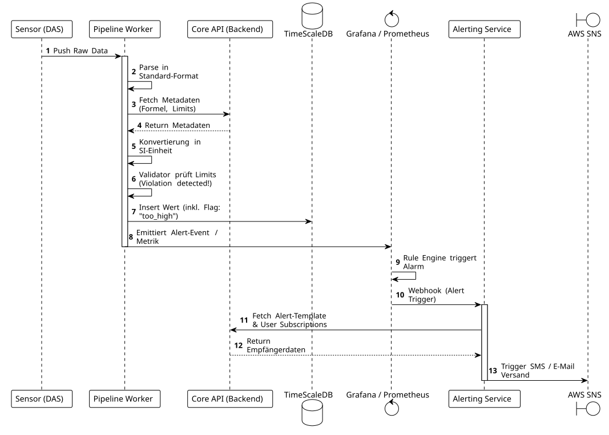
6.2. Szenario 2: Manueller Upload & Admin-Freigabeprozess
Nicht alle Daten fliessen automatisch in das System. Historische Daten oder Zusatzmessungen werden von Wissenschaftlern per CSV hochgeladen. Um die Datenintegrität zu wahren, ist ein strikter Freigabeprozess vorgeschaltet.
Ablauf:
-
Der Wissenschaftler lädt eine CSV-Datei im Frontend hoch.
-
Das Backend speichert die Datei vorläufig in einem S3-Bucket und erstellt einen Datenbankeintrag (Status:
pending). -
Der Admin wird im UI benachrichtigt, lädt die Datei zur Prüfung herunter und kann sie bei Bedarf korrigiert neu hochladen.
-
Nach dem Klick auf "Akzeptieren" übergibt das Backend die Datei an den Manual Upload Connector der Pipeline.
-
Das Originalfile wird für die spätere Archivierung (AWS Glue) versioniert auf S3 verschoben.
-
Die Pipeline verarbeitet die Daten, als kämen sie von einem Live-Sensor.
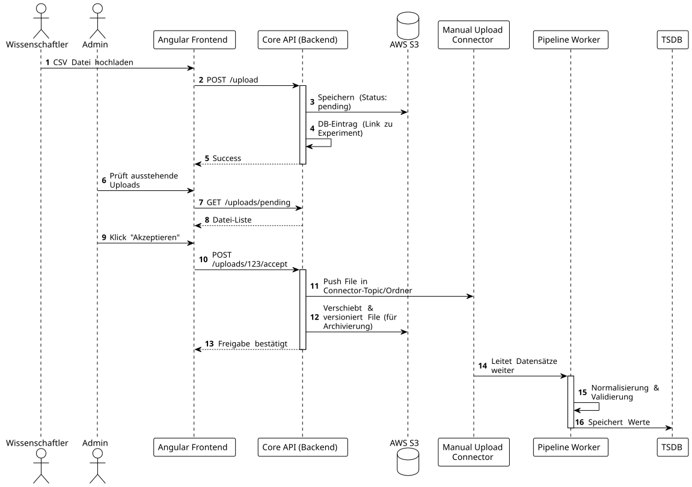
6.3. Szenario 3: Initialisierung des Digitalen Zwillings (3D View)
Der Digitale Zwilling ist ein Kern-Feature für die räumliche Orientierung im Felslabor. Die Komplexität des 3D-Renderings wird dabei architektonisch auf die Clients (Browser) ausgelagert, um das Backend zu schonen.
Ablauf:
-
Der Nutzer öffnet ein Experiment im Frontend.
-
Das Backend liefert das zugehörige 3D-Modell (IFC-File).
-
Das Frontend (
Giro3D) lagert das ressourcenintensive Rendering an Web-Worker des Browsers aus. -
Das IFC-Modell enthält die IDs oder Koordinaten der Sensoren. Das Frontend iteriert über diese IDs und lädt die Metadaten asynchron aus der PostGIS-Datenbank (via Backend) nach, um Overlays und Tooltips bei "Hover"-Aktionen darzustellen.
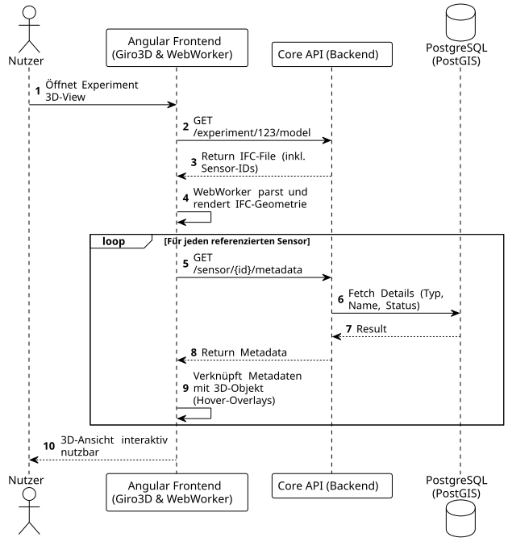
6.4. Szenario 4: Räumliches & Fachliches Filtern
Bei tausenden von Sensoren ist eine leistungsstarke Filterung essenziell. Die Filterkriterien wirken sich synchron auf die tabellarische Darstellung und den 3D-Viewer aus.
Ablauf:
-
Der Nutzer definiert Filterkriterien (z. B. "Drucksensoren in Bohrloch X").
-
Die Abfrage wird an das Backend gesendet, welches via
jOOQdynamische Queries auf der Datenbank ausführt. -
Die gefilterte Liste der Sensor-IDs wird an das Frontend retourniert.
-
Das Frontend nutzt Angular Signals und
localStorage, um sowohl die Datentabelle (ag-Grid) als auch den Digitalen Zwilling (Giro3D) synchron zu aktualisieren – nicht relevante Sensoren werden im 3D-Raum ausgeblendet.
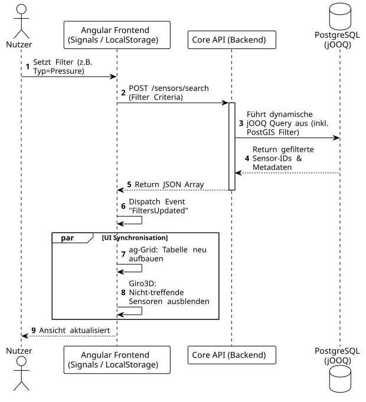
6.5. Szenario 5: Visualisierung langer Zeitreihen (FDW & Downsampling)
Das Abfragen von Zeitreihen, die Jahre zurückreichen, ist hochgradig datenintensiv. Hier kommt die Performance der TimeScaleDB in Kombination mit postgres_fdw und Downsampling zum Tragen.
Ablauf:
-
Der Nutzer wählt einen Sensor und einen grossen Zeitraum (z. B. 10 Jahre) für einen Plot (
Chart.js) aus. -
Das Backend prüft die Zeitspanne und leitet einen Downsampling-Request an die TimeScaleDB weiter. (Vordefinierte Buckets, z.B. Zeitspanne > 1 Jahr → Bucket=hourly)
-
Die TimeScaleDB aggregiert die Messwerte nativ (z. B. via
time_bucket) und joined viaFDWtransparent notwendige Metadaten (wie Einheiten) aus der PostgreSQL. -
Das Backend empfängt ein stark komprimiertes, aber visuell akkurates JSON-Array und liefert es an das Frontend aus.
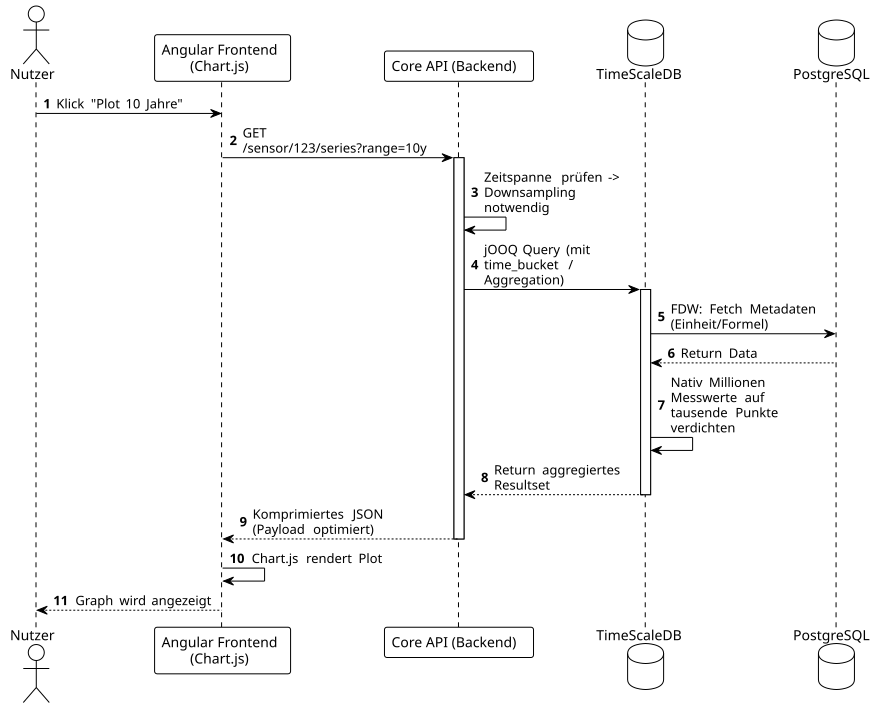
6.6. Szenario 6: SSO, Authentifizierung & Role-Based Data Filtering
Die Sicherheit und rollenbasierte Zugriffskontrolle (RBAC) ist eine Anforderung der Priorität 1. MONTEIS nutzt einen eigenen Keycloak als zentralen Identity Access Management (IAM) Server, welcher AGOV als Identity Provider (IdP) integriert. Das Spring Boot Backend fungiert als klassischer Resource Server.
Ablauf:
-
Der Nutzer öffnet die Web-App und wird vom Angular Frontend an den Keycloak weitergeleitet (OIDC Authorization Code Flow).
-
Der Nutzer authentifiziert sich (z. B. via AGOV). Keycloak mappt die vom Admin konfigurierten Rollen und Berechtigungen auf den User.
-
Keycloak stellt ein JWT (JSON Web Token) aus, in dessen Claims die spezifischen Rollen (z. B.
read_experiment_A) verankert sind. -
Das Frontend sendet dieses JWT bei jedem REST-Call im
Authorization: BearerHeader mit. -
Ein Security-Filter im Spring Boot Backend fängt den Request ab, verifiziert die Signatur des Tokens (via JWKS von Keycloak) und parst die Claims in den Security Context.
-
Die Core API nutzt diese extrahierten Rollen direkt bei den jOOQ-Datenbankabfragen als Filterkriterium (z. B. in der
WHERE-Klausel), sodass der Nutzer ausschliesslich Daten erhält, für die er berechtigt ist.
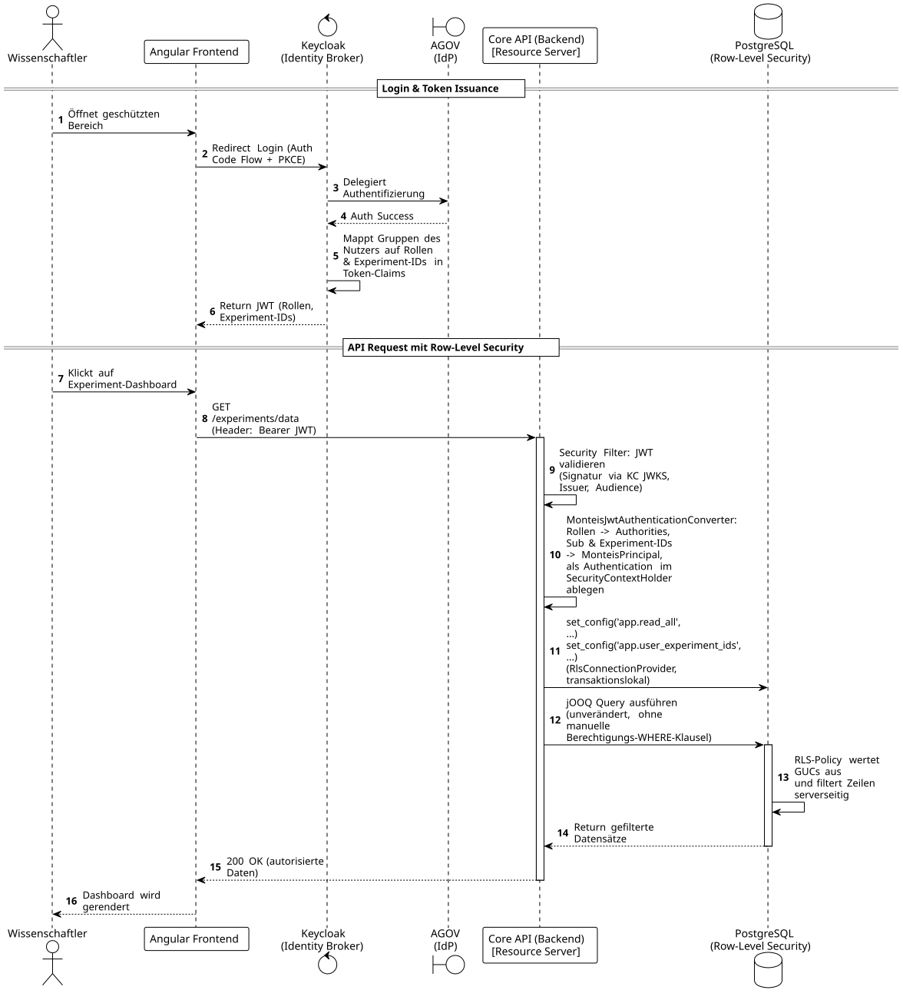
6.7. Szenario 7: On-Demand Datenabruf aus Umsystemen (Fulcrum Integration)
MONTEIS kommuniziert eng mit Umsystemen wie Fulcrum (dem digitalen Logbuch des Felslabors). Anstatt alle Log- und Asset-Daten asynchron und redundant in die MONTEIS-Datenbank zu spiegeln, wendet die Architektur für diese Daten das On-Demand Fetching (Pull-Pattern) an.
Das Spring Boot Backend fungiert hierbei als API-Gateway. Wenn externe Daten benötigt werden, werden diese "Just in Time" via REST abgerufen.
Ablauf:
-
Der Nutzer öffnet in der Angular Web-App die Detailansicht eines Experiments oder Sensors und fordert die aktuellen Logbuch-Einträge an.
-
Das Frontend sendet einen Request an die MONTEIS Core API.
-
Der REST Controller im Spring Boot Backend fängt den Request ab und formuliert eine synchrone Abfrage (z.B. via Fulcrum Query API) an das Umsystem Fulcrum.
-
Fulcrum retourniert die tagesaktuellen Log-Daten.
-
Die Core API mappt/formatiert die Daten in das interne MONTEIS-Format und liefert sie an das Frontend aus.
-
Der Nutzer sieht die absoluten Live-Daten aus Fulcrum, ohne dass diese physisch in der PostgreSQL von MONTEIS gespeichert werden mussten.
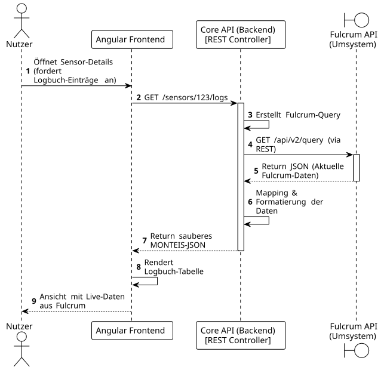
6.8. Szenario 8: TimeScaleDB Daten-Lebenszyklus (Downsampling & Kompression)
Um die enorme Menge an Messwerten (Ziel: 200 Milliarden) performant abfragbar zu halten und gleichzeitig die Speicherkosten der Datenbank zu minimieren, durchlaufen die Zeitreihendaten in der TimeScaleDB einen streng definierten, automatisierten Lebenszyklus.
Dieser Prozess nutzt die nativen TimeScaleDB-Features Continuous Aggregates (für das Downsampling) und Hypertable Compression (für die Reduktion des Speicher-Overheads).
Die Aggregations- und Retentions-Regeln im Detail:
-
Raw Data (Hypertable): Rohdaten werden primär für die Live-Ansicht (0 - 10 Tage) genutzt. Sie bleiben für 120 Tage unkomprimiert, um Nachlieferungen oder Updates von Messwerten problemlos zuzulassen. Nach 120 Tagen greift die native Kompression der TimeScaleDB (updates sind immer noch möglich aber weniger performant).
-
Continuous Aggregates (Downsampling): Die Rohdaten werden im Hintergrund in materialisierte Views (Buckets) aggregiert.
-
Rolling Windows (Retention Policies): Um ein unendliches Wachstum der fein granularen Views zu verhindern, werden alte Daten-Chunks in den Buckets automatisch gelöscht (Drop), sobald sie aus ihrem definierten Zeitfenster fallen.
Definierte Buckets & Zeitfenster:
-
1-Minuten Bucket: Deckt die letzten 30 Tage ab. (Daten > 30 Tage werden verworfen).
-
15-Minuten Bucket: Deckt den Zeitraum von Tag 20 bis Tag 60 ab. (Daten > 60 Tage werden verworfen).
-
1-Stunden Bucket: Deckt den Zeitraum von Tag 50 bis 2 Jahre ab. (Daten > 2 Jahre werden verworfen).
-
1-Tages Bucket: Deckt den Zeitraum ab 2 Jahren für die Langzeitspeicherung ab.
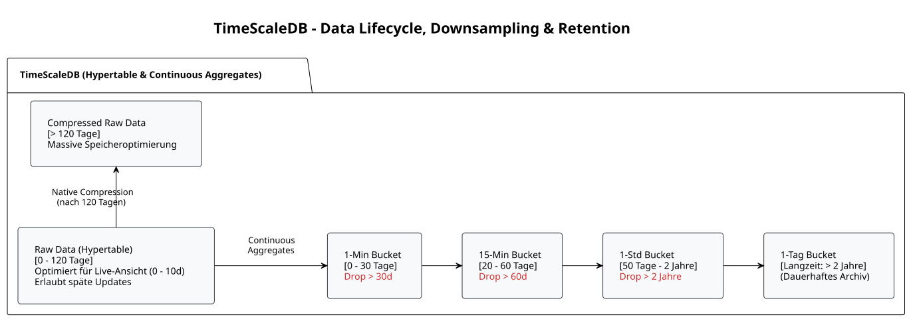
Neben der Datenbank-Optimierung verlässt sich MONTEIS auf zeitgesteuerte Hintergrundprozesse (Cron/Batch-Jobs), um die Speicherkosten für unveränderte Originaldaten zu minimieren. Um die rohen Originaldaten physisch zu sichern (für Compliance, Backups oder spätere Reprozessierung), fliessen diese parallel zur TimeScaleDB in einen Cloud-Objektspeicher.
Ablauf der Archivierung:
-
Pufferung im Hot Storage: Die Pipeline-Worker halten eine Kopie der Originaldatensätze kurzzeitig im Arbeitsspeicher und flushen diese regelmässig (z. B. alle 15 Minuten) als Batch-Files in einen regulären AWS S3 Bucket ("Hot Storage").
-
AWS S3 Glacier Archiving (Cold Storage): Mittels AWS S3 Lifecycle Rules werden die verteilten, temporären Rohdaten-Files aus dem "Hot Storage" (AWS S3 Standard Tier) in den weitaus günstigeren "Cold Storage" (AWS S3 Glacier) für die langfristige Speicherung verschoben. Die Daten werden semi-strukturiert (z. B. pro Sensor und Tag) abgelegt.
Hinweis: Die Daten im Glacier dienen rein der Notfall-Wiederherstellung oder historischen Nachprüfungen und werden vom regulären Frontend nicht abgefragt.
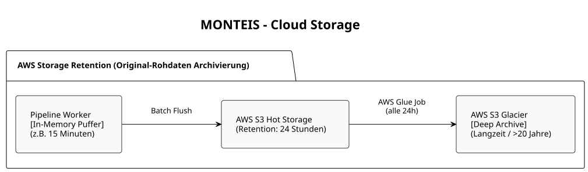
6.9. Datenkonsistenz & Unabhängiges Routing (Kafka Consumer Groups)
6.9.1. Die Anforderung (Raw vs. Transformed)
Es muss immer gewährleistet sein, dass die Daten korrekt wiederhergestellt werden können und keine Daten verloren gehen. Aus diesem Grund stellen zwei unabhängige Flows sicher, dass die Original-Rohdaten in S3 verschoben und die transformierten und validierten Daten in die TimeScaleDB geschrieben werden.
6.9.2. Die Lösung: Fan-Out am Raw-Topic
Da Kafka als persistentes Logbuch (Append-Only Log) agiert, können mehrere Abonnenten dieselbe Nachricht unabhängig voneinander lesen. Der Datenstrom wird direkt am Eingangs-Topic aufgespaltet:
-
Storage Archiver (Raw Data Path): Ein nativer Kafka Connect Sink (oder der POC Worker) lauscht auf den Raw-Topic mit einer eigenen Consumer Group (
s3-archive). Er puffert die Rohdaten und schiebt sie periodisch in den AWS S3 (Hot Storage). Von dort greifen automatisierte AWS Lifecycle Rules, die Daten nach einer definierten Zeit in den AWS Glacier (Cold Storage) zur Langzeitarchivierung verschieben.-
Im POC-Stadium: Der Pipeline-Pod übernimmt diese Aufgabe vorübergehend mit. Eine separate asynchrone Routine im Pod puffert die Daten (Pipeline Pod - Stateful Polling Konzept), formatiert sie im Hive-Partitioning-Stil (
sensor_id/year/month) und lädt sie periodisch nach S3 hoch. -
Final Solution (Kafka Connect): Der S3-Upload-Code wird aus dem Pipeline-Pod entfernt. Stattdessen übernimmt ein nativer Confluent S3 Sink Connector diese Aufgabe. Da der POC die Datei- und Ordnerstrukturen von Kafka Connect exakt nachgeahmt hat, verläuft der Wechsel für nachgelagerte Systeme absolut transparent.
-
-
Pipeline Pod (Transformed Data Path): Der Pipeline-Worker lauscht auf denselben Raw-Topic mit einer völlig unabhängigen Consumer Group (
etl-pipeline). Er transformiert die Daten, prüft Grenzwerte, triggert Alerts und speichert das finale Resultat in die TimescaleDB.
Fehlertoleranz durch getrennte Offsets: Kafka verwaltet den Fortschritt (Offset) für jede Consumer Group separat. Wenn der S3-Upload erfolgreich ist, die TimescaleDB jedoch offline geht, rückt nur das "Lesezeichen" der S3-Gruppe vor. Die Pipeline-Gruppe committet ihren Offset nicht. Nach Behebung des Datenbankausfalls wird der Pipeline-Pod gezwungen, die fehlgeschlagene Nachricht erneut zu verarbeiten. Es geht kein Wert verloren.
6.9.3. Architektur-Übersicht
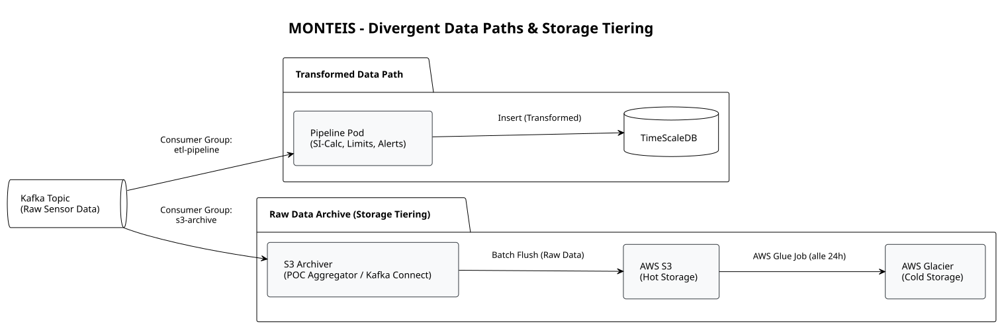
6.9.4. Pipeline Pod - Stateful Polling Konzept
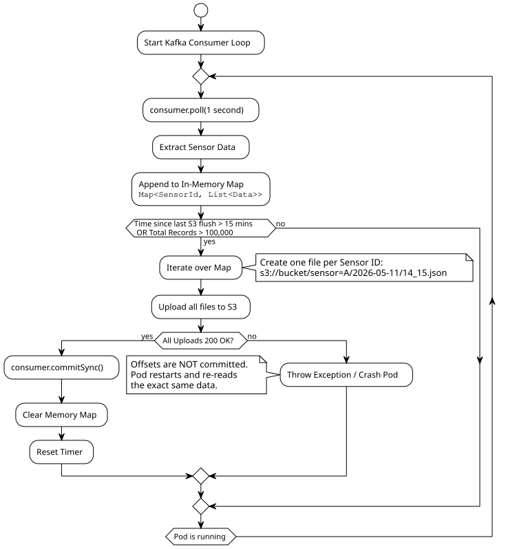
7. Verteilungssicht
7.1. Infrastruktur Ebene 1: AWS Cloud Resourcen
Das nachfolgende Diagram zeigt die wichtigsten AWS Resourcen (Dienste) für das MVP auf. Die Resourcen sind logisch gruppiert in die drei Schichten: "Interface Layer", "Business Layer" und "Persistance Layer". Die Gruppierung "Global Services" dient der Verortung von global (= Layer-unabhängig) genutzten AWs Diensten. Zur besseren Einortung ist zusätzlich das Kubernetes Cluster, bereitgestellt durch AWS EKS, angedeutet, um den Dienst "Keycloak" als zentralen Access- und Identity-Dienst einzuordnen.
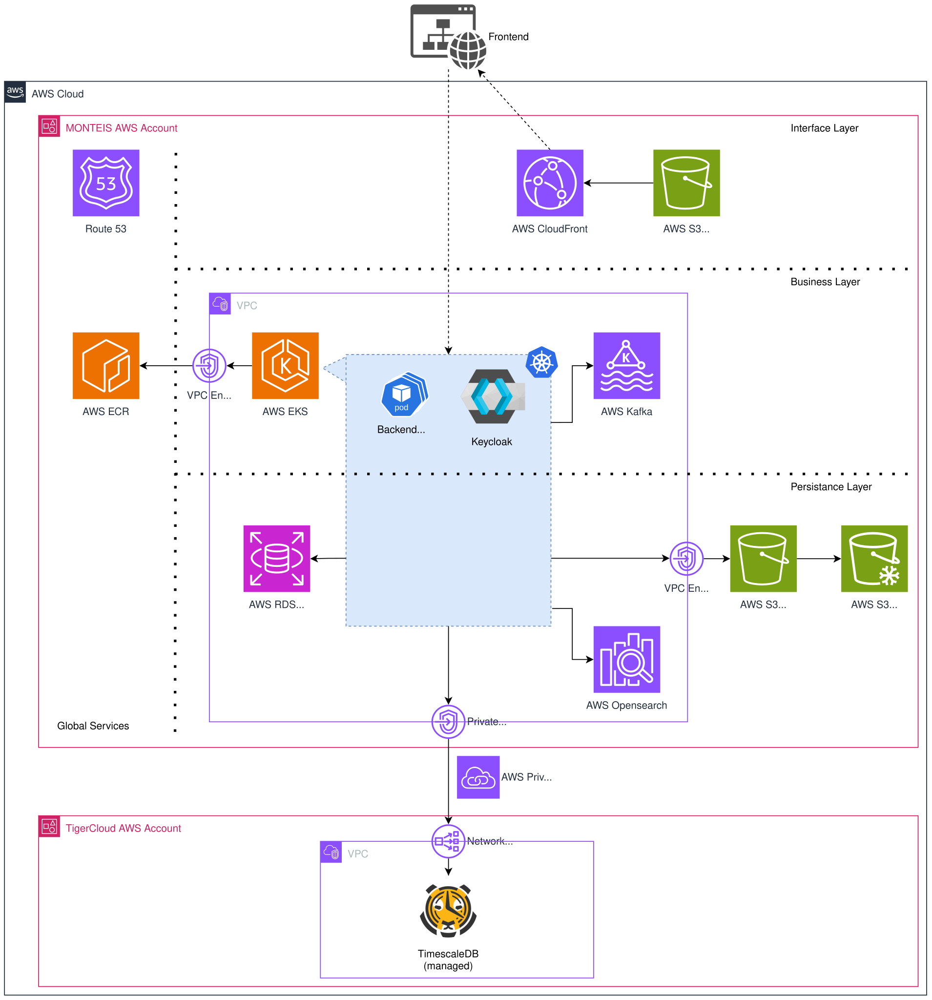
7.1.1. Beschreibung AWS Cloud Resourcen
| Layer | Service | Aufgabe | Notiz |
|---|---|---|---|
Global |
Route53 |
Zentraler AWS DNS Service |
|
Global |
AWS ECR |
Container Registry für Build-Artefakte (z.B. Container Images) |
|
Interface |
AWS CloudFront |
Content-Delivery-Network (CDN) zur Bereitstellung Frontend |
|
Interface |
AWS S3 |
Hosting Frontend Artefakte |
|
Business |
AWS EKS |
Managed Kubernetes Cluster |
|
Business |
AWS Kafka |
Managed Kafka Cluster |
|
Business |
Keycloak |
Open-Source Identity Provider & User-Management |
|
Business |
VPC Endpoint |
Sichere Netzwerk-Verbindung zwischen VPC und globalen AWS Services über privates AWS Netzwerk |
Für MVP empfehlenswert Vorteile: Nutzung AWS-internes Netzwerk (kein öffentliches Internet!) + Kostenreduktion Traffic (vs. NAT Gateway) Ref: https://pcg.io/insights/vpc-endpoints-explanation-and-cost-comparison/ |
Business / Persistence |
VPC |
Virtual Private Cloud, dedizierter Netzwerkbereich für Compute und Storage Resourcen |
|
Persistence |
AWS RDS for PostgreSQL |
Managed Datenbank für Metadaten |
|
Persistence |
TimescaleDB |
Datenbank für Zeitreihen-Daten |
|
Persistence |
AWS S3 |
Object-Storage (hot & cold) |
|
Persistence |
AWS OpenSearch |
Service für Indexierung und Volltext-Suche |
|
Persistence |
AWS PrivateLink |
Sichere Netzwerk-Verbindung zwischen zwei VPCs über privates AWS Netzwerk |
Für MVP empfehlenswert https://docs.aws.amazon.com/whitepapers/latest/aws-vpc-connectivity-options/aws-privatelink.html https://www.tigerdata.com/docs/deploy/tiger-cloud/tiger-cloud-aws/security/vpc |
8. Querschnittliche Konzepte
8.1. Core-API Datenzugriff & Sicherheit
Das Ziel dieser Architektur ist es, den Business-Code (Service Layer) zu 100 % sauber von Berechtigungsprüfungen zu halten. Die Sicherheit wird stattdessen an den Rändern des Systems durchgesetzt.
-
Der Security Context (
ScopedValue) & Access Levels: Ein Spring-Filter fungiert als Trichter (Funnel). Er normalisiert die eingehende Authentifizierung – unabhängig davon, ob es sich um ein menschliches JWT oder einen Maschinen-API-Key (z.B. von der Data Pipeline) handelt – in einen systemweiten Zugriffslevel (USER,ADMIN,DATA_PIPELINE). Dieser Level sowie die für User extrahierten Entitäts-IDs (Lese- und Schreibrechte) werden in einem modernen, threadsicheren JavaScopedValue(dem Nachfolger vonThreadLocal) für die Dauer des Requests gespeichert. -
Die "Master Security Lineage" View: Um komplexe Hierarchien und M:N-Beziehungen in der Datenbank abzubilden, ohne den Java-Code aufzublähen, wird eine zentrale SQL-View erstellt. Diese View mappt alle Entitäten flach auf ihre jeweiligen "Root-Rollen-IDs".
-
Der jOOQ
VisitListener(Für Lese-/Änderungszugriffe): Dieser jOOQ-Interceptor fängt automatisch jedesSELECT,UPDATEundDELETEab, bevor es zur Datenbank geschickt wird. Er liest den Zugriffslevel und die IDs aus demScopedValueund trifft situationsbedingte Routing-Entscheidungen:ADMIN-Anfragen passieren ungefiltert,DATA_PIPELINE-Anfragen werden hart auf spezifizierte Tabellen (wie Sensordaten) isoliert, und bei regulärenUSER-Anfragen hängt er transparent eineWHERE-Bedingung an das SQL an, die auf Basis der Master-View filtert. Der Entwickler schreibt im Service nurfetch(), aber die Datenbank führt automatisch das korrekt gefilterte SQL aus. -
Der jOOQ
RecordListener(Für INSERTs): DaINSERT-Statements keineWHERE-Klausel haben, greift hier ein zweiter Interceptor. Er prüft den Java-Payload direkt vor dem Speichern ab und wirft eine Exception, falls ein standardUSERversucht, Daten für eine Entität anzulegen, für die er keine Schreibrechte besitzt.
8.2. Core-API Optimistic Locking und Versionierung/Auditierung
8.2.1. 1. Technischer Hintergrund: Optimistic Locking
Im Gegensatz zum Pessimistic Locking (bei dem Datensätze explizit auf Datenbankebene über SELECT … FOR UPDATE gesperrt werden), geht das Optimistic Locking davon aus, dass parallele Schreibzugriffe auf denselben Datensatz selten sind. Die Konflikterkennung wird bis zum eigentlichen Schreibvorgang verzögert.
Der Mechanismus: Die Tabelle erhält eine zusätzliche Spalte (z.B. VERSION als Integer oder einen Zeitstempel).
Der Lesezugriff: Beim Laden eines Datensatzes wird diese Version mitgelesen.
Der Schreibzugriff: Beim Speichern wird ein UPDATE abgesetzt, das die alte Version in der WHERE-Klausel voraussetzt und die Version im SET-Block inkrementiert:
UPDATE tabelle SET daten = 'neu', version = 2 WHERE id = 123 AND version = 1;
Die Prüfung: Die Datenbank meldet zurück, wie viele Zeilen aktualisiert wurden (Rows Affected). Ist dieser Wert 0, bedeutet dies, dass ein anderer Prozess den Datensatz in der Zwischenzeit modifiziert hat. In diesem Fall wirft der ORM oder Query-Builder (hier jOOQ) eine Exception (z.B. DataChangedException), was in der Regel zu einem Rollback der Datenbanktransaktion führt.
8.2.2. 2. Architektur und Trennung der Zuständigkeiten
Die gewählte Schichtenarchitektur trennt das Concurrency Management (jOOQ) strikt vom Audit-Logging (JaVers).
REST-Schicht (DTOs): Dient als Ein- und Ausgangspunkt. Das DTO transportiert die Nutzdaten inklusive der vom Client zuletzt gelesenen Version.
Service-Schicht (Domain Models): Führt die reine Geschäftslogik aus. Diese Schicht arbeitet mit domänenspezifischen Java-Objekten. Ein Spring AOP-Aspekt (Aspektorientierte Programmierung) überwacht hier die Service-Methoden (z.B. getriggert durch @AfterReturning oder eine Custom Annotation).
Persistenz-Schicht (jOOQ Records): Übernimmt das Mapping vom Domain Model auf den jOOQ UpdatableRecord. Durch den Aufruf von record.store() generiert jOOQ das notwendige SQL für das Optimistic Locking vollautomatisch und wertet die betroffenen Zeilen aus.
Audit-Schicht (JaVers): Arbeitet vollkommen passiv. Der AOP-Aspekt greift sich das resultierende Domain Model nur dann, wenn die Methode der Business-Schicht erfolgreich und ohne Exceptions beendet wurde, und committet den Status-Diff in die JaVers-Tabellen.
8.2.3. 3. Erfolgs- und Fehlerfall
Das folgende Diagramm veranschaulicht den Datenfluss und das Zusammenspiel der Komponenten, insbesondere warum fehlgeschlagene Updates nicht zu fehlerhaften Audit-Einträgen führen.
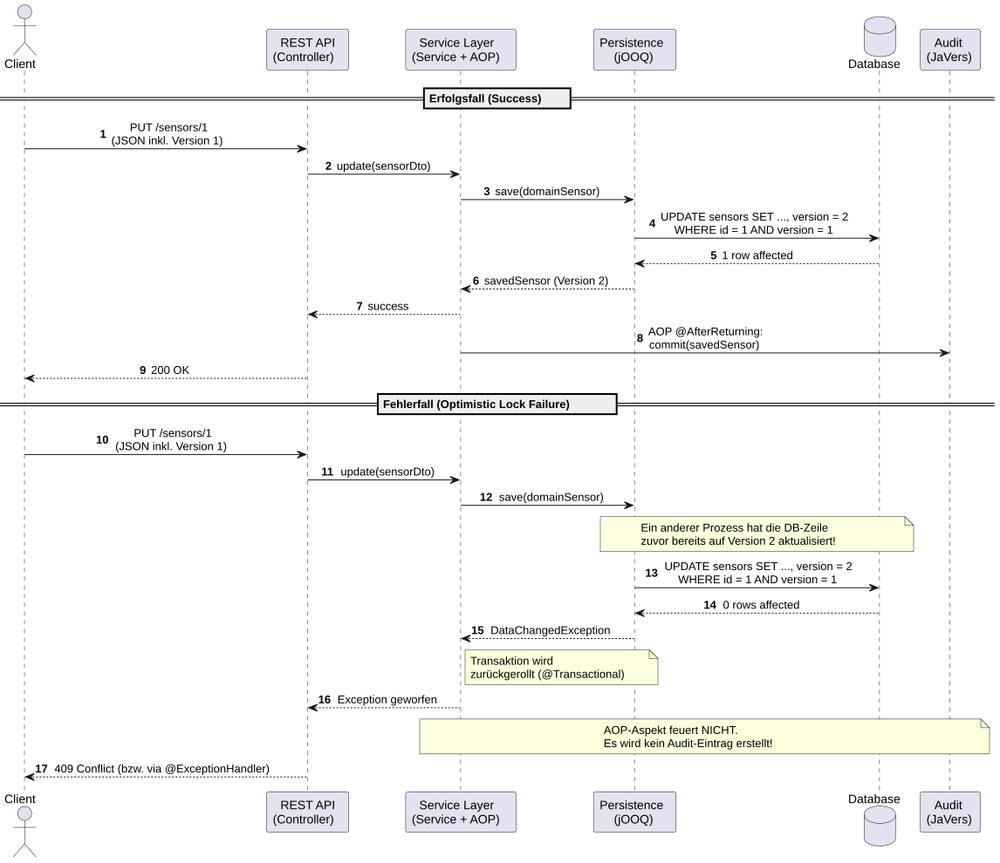
Wenn bei der Versionierung etwas schief geht, erfolgt ein Rollback der Übergeordneten Transaktion, damit die gespeicherten Daten und die zugehörige Versionierung konsistent bleiben (Wenn etwas gespeichert wird, ist es in der Versionierung ersichtlich).
8.2.4. 4. Aspekt für die Versionierung
Damit die Service-Schicht nur minimale Kenntnisse von der Versionierung haben muss, wird ein Spring AOP Aspekt verwendet. Methoden werden lediglich mit einer eigenen Annotation versehen (@AuditChanges), damit das betroffene Objekt vom Aspekt aufgegriffen und sauber in den Versionstabellen von JaVers abgelegt wird. Hier gilt zu beachten, dass @AfterReturning verwendet wird, damit beim Einfügen eines neuen Objekts dessen eindeutige ID bereits gesetzt wurde. Hier ist ein Beispiel, wie der Aspekt aussehen könnte:
import org.aspectj.lang.JoinPoint;
import org.aspectj.lang.annotation.AfterReturning;
import org.aspectj.lang.annotation.Aspect;
import org.javers.core.Javers;
import org.springframework.security.core.context.SecurityContextHolder;
import org.springframework.stereotype.Component;
@Aspect
@Component
public class JaversAuditAspect {
private final Javers javers;
public JaversAuditAspect(Javers javers) {
this.javers = javers;
}
// Intercept any method annotated with @AuditChanges AFTER it returns successfully
@AfterReturning("@annotation(AuditChanges)")
public void auditMethodArguments(JoinPoint joinPoint) {
// 1. Get the current user from your JWT Security Context
String currentUser = "SYSTEM";
if (SecurityContextHolder.getContext().getAuthentication() != null) {
currentUser = SecurityContextHolder.getContext().getAuthentication().getName();
}
// 2. Loop through the method arguments and commit them
Object[] args = joinPoint.getArgs();
for (Object arg : args) {
// Optional: You might want to check if 'arg' is a specific interface
// like 'AuditableDto' so you don't accidentally audit simple Strings/Integers.
if (arg != null) {
javers.commit(currentUser, arg);
}
}
}
}Voraussetzung:
-
Aspekt muss als Komponente und Aspekt annotiert sein
-
Dependency muss im pom.xml definiert sein:
<dependency>
<groupId>org.springframework.boot</groupId>
<artifactId>spring-boot-starter-aop</artifactId>
</dependency>8.3. Core-API Validierung (Validation & Error Handling)
Die Validierung ist in zwei Schichten unterteilt und wird über einen zentralen Mechanismus so verarbeitet, dass das Frontend (Angular) immer eine einheitliche, übersetzungsfertige Struktur erhält.
-
Syntaktische Validierung (Annotationen auf DTOs):
-
Wo: Im Interface Layer (Controller-Eingang).
-
Wie: Mit Jakarta-Annotationen (z.B. @Min(18), @NotBlank) direkt auf den Java DTOs. Als message wird kein Text, sondern der Translation-Key (z.B. user.age.out_of_range) hinterlegt.
-
Zweck: Fängt formale Fehler sofort ab (400 Bad Request), bevor sie die Business-Logik erreichen.
-
-
Semantische Validierung (Business-Logik):
-
Wo: Im Service Layer.
-
Wie: Der Service prüft fachliche Regeln (z.B. "Darf dieser Sensor hier platziert werden?"). Schlägt dies fehl, wirft der Service eine eigene, massgeschneiderte Exception (z.B.
BusinessValidationException), welche das betroffene Feld und den Message-Key enthält.
-
-
Der Magische
@RestControllerAdvice(Zentraler Exception Handler):-
Dies ist das Herzstück. Er fängt sowohl die fehlgeschlagenen DTO-Annotationen als auch die Business-Exceptions ab.
-
Er extrahiert dynamisch den Namen des fehlerhaften Feldes (z.B.
age) und weist diesem den aktuellen Eingabewert des Users zu. -
Er liest per Reflection alle Parameter aus den Annotationen (z.B. das
minLimit aus@Min) komplett ohne hartcodierte Strings aus. -
Er formt all das in einen standardisierten JSON-Payload um und sendet ihn ans Frontend.
-
Das Resultat für das Frontend:
Egal ob eine DTO-Annotation fehlschlägt oder der Service eine Exception wirft, Angular erhält immer den gleichen Payload: Den Feldnamen, den Translation-Key und ein dynamisches Parameter-Objekt (z.B. { "age": 16, "min": 18 }), welches direkt und dumm in die Frontend-Übersetzungs-Pipe geschleust werden kann.
-
Übersetzungsfile im Frontend: Im Angular Asset Folder werden die Übersetzungsfiles platziert. Sie enthalten dieselben Schlüssel, die das Backend verwendet (z.B.
user.age.out_of_range).
{
"user.age.out_of_range": "Your current age is {{ age }}, but it must be at least {{ min }}.",
"validation.field.required": "This field cannot be empty."
}8.4. Datenbankschemata
Im Folgenden ist das aktuelle logische und physische Datenbankschema dokumentiert. Wie in Kapitel 5 beschrieben, verwenden wir als primären Einstiegspunkt eine PostgreSQL-Datenbank mit der PostGIS-Erweiterung für die Verwaltung der Metadaten und Geoinformationen.
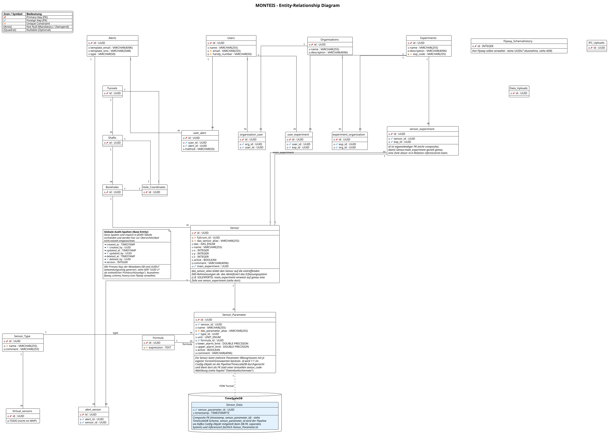
8.4.1. TimeScaleDB Schema (Zeitreihen & Downsampling)
Das Schema der TimeScaleDB für die hochfrequenten Zeitreihendaten umfasst neben der Hypertable auch die Continuous Aggregates (Downsampling-Buckets) und die Retention-Policies für das Daten-Lebenszyklus-Management.
-- 1. Enum für Range-Status
-- Bleibt speichereffizient (4 Bytes) und hochgradig komprimierbar
CREATE TYPE range_category AS ENUM ('too_low', 'correct', 'too_high');
-- 2. Base Table erstellen (Raw Data)
-- Hinweis: sensor_id ist sensor_code in der Metadaten DB
CREATE TABLE sensor_readings (
timestamp TIMESTAMPTZ NOT NULL,
sensor_id TEXT NOT NULL,
raw_value DOUBLE PRECISION NOT NULL,
norm_value DOUBLE PRECISION,
version SMALLINT DEFAULT 1,
status range_category,
-- Composite Primary Key: Erzwingt Eindeutigkeit pro Sensor & Zeitstempel
PRIMARY KEY (timestamp, sensor_id)
);
-- 3. In eine Hypertable konvertieren (Partitionierung nach 'timestamp')
SELECT create_hypertable('sensor_readings', 'timestamp');
-- 4. Native Kompression für Originaldaten aktivieren (nach 120 Tagen)
ALTER TABLE sensor_readings SET (
timescaledb.compress,
timescaledb.compress_segmentby = 'sensor_id'
);
SELECT add_compression_policy('sensor_readings', INTERVAL '120 days');
-- ==========================================
-- CONTINUOUS AGGREGATES (Downsampling Buckets)
-- ==========================================
-- Bucket 1: 1-Minuten-Aggregation
CREATE MATERIALIZED VIEW sensor_readings_1m
WITH (timescaledb.continuous) AS
SELECT time_bucket('1 minute', timestamp) AS bucket,
sensor_id,
AVG(norm_value) AS avg_value,
MAX(norm_value) AS max_value,
MIN(norm_value) AS min_value
FROM sensor_readings
GROUP BY bucket, sensor_id;
-- Bucket 2: 15-Minuten-Aggregation
CREATE MATERIALIZED VIEW sensor_readings_15m
WITH (timescaledb.continuous) AS
SELECT time_bucket('15 minutes', timestamp) AS bucket,
sensor_id,
AVG(norm_value) AS avg_value
FROM sensor_readings
GROUP BY bucket, sensor_id;
-- Bucket 3: 1-Stunden-Aggregation
CREATE MATERIALIZED VIEW sensor_readings_1h
WITH (timescaledb.continuous) AS
SELECT time_bucket('1 hour', timestamp) AS bucket,
sensor_id,
AVG(norm_value) AS avg_value
FROM sensor_readings
GROUP BY bucket, sensor_id;
-- Bucket 4: 1-Tages-Aggregation (Langzeitarchiv)
CREATE MATERIALIZED VIEW sensor_readings_1d
WITH (timescaledb.continuous) AS
SELECT time_bucket('1 day', timestamp) AS bucket,
sensor_id,
AVG(norm_value) AS avg_value
FROM sensor_readings
GROUP BY bucket, sensor_id;
-- ==========================================
-- RETENTION POLICIES (Rolling Windows)
-- ==========================================
-- Alte Aggregationen verwerfen, sobald sie aus ihrem Zeitfenster fallen:
SELECT add_retention_policy('sensor_readings_1m', INTERVAL '30 days');
SELECT add_retention_policy('sensor_readings_15m', INTERVAL '60 days');
SELECT add_retention_policy('sensor_readings_1h', INTERVAL '2 years');
-- Anmerkung: Die 'sensor_readings_1d' View behält Daten dauerhaft.
-- ==========================================
-- REFRESH POLICIES (Background Jobs für Continuous Aggregates)
-- ==========================================
-- 1-Minuten-Bucket: Aktualisiert sich jede Minute im Hintergrund
SELECT add_continuous_aggregate_policy('sensor_readings_1m',
start_offset => NULL,
end_offset => INTERVAL '1 minute',
schedule_interval => INTERVAL '1 minute');
-- 15-Minuten-Bucket: Aktualisiert sich alle 15 Minuten
SELECT add_continuous_aggregate_policy('sensor_readings_15m',
start_offset => NULL,
end_offset => INTERVAL '15 minutes',
schedule_interval => INTERVAL '15 minutes');
-- 1-Stunden-Bucket: Aktualisiert sich stündlich
SELECT add_continuous_aggregate_policy('sensor_readings_1h',
start_offset => NULL,
end_offset => INTERVAL '1 hour',
schedule_interval => INTERVAL '1 hour');
-- 1-Tages-Bucket: Aktualisiert sich einmal pro Tag (z.B. Nachts)
SELECT add_continuous_aggregate_policy('sensor_readings_1d',
start_offset => NULL,
end_offset => INTERVAL '1 day',
schedule_interval => INTERVAL '1 day');8.5. API-Schnittstellen (Contracts)
Im folgenden Abschnitt sind die API-Endpoints als OpenAPI-Spezifikation (YAML) definiert. Diese Spezifikation dient während der aktiven Entwicklungsphase als fester Vertrag (Contract) zwischen dem Backend, dem Frontend und der Ingestion-Pipeline. Die YAML-Blöcke können direkt in Werkzeuge wie den Swagger Editor kopiert werden, um Mocks und Client-Code zu generieren.
Hinweis: Nach Abschluss der Entwicklungsarbeiten wird dieser statische Block aus dem Architektur-Dokument entfernt und durch einen Link auf die live generierte, dynamische API-Dokumentation (z. B. via Swagger UI des Backends) ersetzt.
openapi: 3.0.3
info:
title: Sensor Configuration API
version: 1.0.0
description: API to retrieve sensor calibration, formula (via JSONLogic), and boundary data.
paths:
/sensors/config:
get:
summary: Retrieve sensor metadata
description: Fetches the JSONLogic formula, boundaries, and version information for a specific sensor.
operationId: getSensorConfig
parameters:
- name: sensorid
in: query
required: true
description: The unique identifier of the sensor.
schema:
type: string
responses:
'200':
description: Successful response containing the sensor configuration.
content:
application/json:
schema:
$ref: '#/components/schemas/SensorConfig'
'400':
description: Bad Request - Missing or invalid sensorid.
'404':
description: Not Found - The specified sensorid does not exist.
components:
schemas:
SensorConfig:
type: object
required:
- sensor_id
- formula
- upper_bound
- lower_bound
- version
properties:
sensor_id:
type: string
description: The unique identifier for the sensor.
example: "sensor-geo-8472"
formula:
type: object
description: Normalized representation of the conversion formula using JSONLogic.
additionalProperties: true
example:
"+":
- "sqrt":
- "pow":
- "*":
- "var": "x"
- 1.8
- 2
- 32
upper_bound:
type: number
format: double
description: The maximum limit for this sensor used for alerting.
example: 150000.5
lower_bound:
type: number
format: double
description: The minimum limit for this sensor used for alerting.
example: -100.0
version:
type: integer
description: The version number of this specific configuration record.
example: 28.6. Teststrategie
Um die Stabilität und Datenintegrität von MONTEIS zu gewährleisten, verfolgen wir eine schichtenbasierte Teststrategie. Der Fokus liegt darauf, die gesamte Funktionalität und das fachliche Verhalten der Applikation rigoros abzusichern, ohne durch fragile Layout-Tests unnötigen Wartungsaufwand zu erzeugen.
Um eine konstant hohe Code-Qualität zu garantieren, wird systemübergreifend SonarQube eingesetzt. Eine Mindestabdeckung dient als Guardrail, wobei die Aussagekraft der Tests (fachliche Relevanz, Fehlererkennungsfähigkeit) höher gewichtet wird als die reine Prozentzahl.
8.6.1. Frontend Testing
Im Angular-Frontend liegt der Fokus auf der Überprüfung der isolierten UI-Logik (z. B. State-Management, Filter-Logik, Datenaufbereitung für Charts).
-
Technologie: Wir verwenden das moderne, von Angular unterstützte Vitest für die Unit-Tests.
-
Fokus: Es wird ausschliesslich Logik getestet. Reine Darstellungsaspekte (Layout, CSS, Pixel-Perfektion) werden bewusst von Unit-Tests ausgeschlossen.
8.6.2. Backend Testing (Spring Boot)
Das Backend wird strikt in verschiedene Test-Ebenen unterteilt (Test-Pyramide), um schnelle Feedback-Zyklen und realitätsnahe Datenbanktests optimal zu kombinieren. Als Basis dient hierbei die native Spring Boot Test Suite.
-
Web-Schicht (Controller Tests): Für die REST-Schnittstellen verwenden wir das Spring Boot Slice-Testing (
@WebMvcTest) in Kombination mitMockMvc. Dadurch testen wir das korrekte HTTP-Routing, Input-Validierungen, HTTP-Statuscodes und die JSON-Serialisierung/-Deserialisierung. Die zugrundeliegende Business-Logik (Services) wird auf dieser Ebene via@MockBeangemockt, um den Application Context klein und performant zu halten. -
Business-Logik (Unit Tests): Die eigentliche Fachlogik (Services, Mapper und Configurations) wird isoliert über klassische Unit-Tests mit JUnit 5 und Mockito getestet. Externe Systemgrenzen und die Datenbank (Persistenzschicht) werden auf dieser Ebene konsequent gemockt.
-
Persistenzschicht (Integration Tests): Die Persistenzschicht (jOOQ-Repositories) wird von den normalen Unit-Tests ausgeschlossen. Stattdessen nutzen wir Spring Boot Testcontainers, um die echten Datenbanken als isolierte Docker-Container hochzufahren.
-
Architektur-Fokus (FDW): Um den reibungslosen Datenabruf zu testen, fahren die Testcontainers sowohl eine PostgreSQL- als auch eine TimeScaleDB-Instanz hoch. Im Rahmen des Test-Setups wird der FDW-Tunnel zwischen den Containern initialisiert.
-
Testdaten-Management: Das Schema und die initialen Testdaten für die Container werden pro Test-Suite automatisiert über spezifische Flyway-Skripte aufgebaut.
-
8.6.3. End-to-End Testing (E2E)
Um die isolierten Komponenten-Tests zu komplementieren und das Zusammenspiel des gesamten Systems (Frontend + Backend + Datenbank) zu validieren, setzen wir ebenenübergreifende E2E-Tests ein.
-
Technologie: Playwright
-
Infrastruktur & Setup: Um eine verlässliche und reproduzierbare Testumgebung für die E2E-Tests zu schaffen, implementieren wir ein dediziertes Spring Boot Testing-Profil. Startet man das Backend mit diesem Profil, fährt es automatisch die benötigten Testcontainers (PostgreSQL & TimeScaleDB) hoch und befüllt sie via Flyway. Das Frontend kann anschliessend gegen dieses vollständig gekapselte Backend getestet werden.
-
Fokus: Getestet wird das Verhalten der Applikation anhand der wichtigsten User-Workflows (z. B. Sensor-Filterung, Sensor erstellen, Experiment erstellen, etc.). Auch hier steht das funktionale Verhalten im Vordergrund, nicht das Layout.
8.7. Entwickler-Workflow & CI/CD Pipeline
Um eine konsistente Code-Qualität zu garantieren, den Review-Prozess zu verschlanken und die Server-Ressourcen effizient zu nutzen, wird der Code-Lebenszyklus von lokalen Git-Hooks bis hin zu automatisierten GitHub Actions strikt orchestriert.
8.7.1. Lokaler Workflow (Git Hooks)
Bevor Code in das Repository gepusht wird, greifen lokale Git-Hooks , um formelle Standards bereits auf dem Entwickler-Rechner zu erzwingen:
-
Formatter Pre-Commit Hook: Dieser Hook formatiert geänderte Dateien automatisch und fügt sie dem Staging-Bereich (
git add) wieder hinzu. Dadurch wird sichergestellt, dass der Commit exakt den sauber formatierten Stand enthält.-
Frontend (
.ts/.html): Formatierung und Linting via Prettier und ESLint. -
Backend (
.java): Formatierung via Spotless unter strikter Verwendung des Google Java Formats.
-
-
Commit-Message Hook (
commit-msg): Prüft die Commit-Nachricht vor dem Speichern auf das Einhalten der Conventional Commits (TBD).
8.7.2. Continuous Integration (Pull Request Workflows)
Um die Ressourcen (und Kosten) der Pipeline zu schonen, werden ressourcenintensive CI-Jobs nicht bei jedem einzelnen Push, sondern ausschliesslich bei der Erstellung oder Aktualisierung von Pull Requests (PRs) ausgeführt.
-
Format Checker: Prüft den gesamten Codebestand, um sicherzustellen, dass keine unformatierten Dateien die lokalen Hooks umgangen haben (z. B. durch
git commit --no-verify). -
Full Test Suite: Führt die oben definierte Teststrategie (Unit, Controller, Integration via Testcontainers, E2E) vollständig aus.
-
Security Scanning (Trivy): Eine dedizierte GitHub Action nutzt Trivy für automatisierte Sicherheitsüberprüfungen. Dabei werden die Projekt-Abhängigkeiten, Dockerfiles und Container-Images auf bekannte Schwachstellen (CVEs) und Fehlkonfigurationen (IaC) gescannt. Gefundene kritische Sicherheitslücken (z. B. Severity "HIGH" oder "CRITICAL") blockieren den Pull Request.
-
SonarQube Quality Gate: Eine dedizierte GitHub Action (
sonar-scan) analysiert den Code auf Bugs, Vulnerabilities und Code Smells. Anschliessend prüft die Action den Status des SonarQube Quality Gates. Ein Pull Request kann nur bei grünem Quality Gate gemerged werden.
8.7.3. Continuous Deployment & Release-Workflows
Sobald Code-Änderungen in den main-branch integriert werden oder offizielle Versionen anstehen, übernehmen automatisierte GitHub Actions das Deployment. Das Setup folgt strikt dem Build-Once-Prinzip für Produktions-Releases und einem GitOps-Ansatz für die Infrastruktur.
Es sind drei dedizierte Workflows definiert:
-
Workflow 1: Auto-Deploy auf DEV (Bleeding Edge)
-
Trigger: Automatisch bei jedem Push oder Merge in den
main-Branch. -
Ablauf: Der Workflow baut sofort und kompromisslos ein neues Docker-Image aus dem aktuellen Stand des Codes und deployt dieses auf die
DEV-Umgebung. Diese Stage spiegelt den aktuellsten Entwicklungsstand wider und muss nicht zwingend stabil sein.
-
-
Workflow 2: Create Release (Deployment auf STAGING)
-
Trigger: Manuell (GitHub Workflow Dispatch).
-
Ablauf:
-
Der ausführende Nutzer wählt die Art des Releases (Major, Minor oder Patch basierend auf dem letzten existierenden Git-Tag).
-
Der Workflow aktualisiert die Version im Code (z. B. via
mvn clean install -Drelease=vX.X.Xim Backend). -
Er erstellt den neuen Git-Tag sowie ein offizielles GitHub Release.
-
Die Anwendung wird kompiliert und das neue Docker-Image wird gebaut.
-
Das frisch gebaute Image wird gestartet und durchläuft sofort die komplette End-to-End (E2E) Test-Suite.
-
Nur wenn die E2E-Tests erfolgreich sind, wird das Image in die Container Registry (Amazon ECR) gepusht und automatisch auf der
STAGING-Umgebung deployt.
-
-
-
Workflow 3: Promote to PROD (GitOps)
-
Trigger: Manuell (GitHub Workflow Dispatch).
-
Ablauf: Dieses Skript baut bewusst keine neuen Images, um ungetestete Seiteneffekte zu vermeiden.
-
Der Nutzer wählt einen bereits existierenden Release-Tag aus dem Dropdown.
-
Der Workflow sucht in der Amazon ECR nach dem exakt passenden, auf Staging bereits validierten Docker-Image.
-
Der Workflow checkt das separate Produktions-Infrastruktur-Repository aus.
-
Er aktualisiert dort lediglich den Image-Tag in der
kustomize.yamlund committet die Änderung. -
Durch diesen Commit im Infra-Repo wird das eigentliche Kubernetes-Deployment auf
PROD(GitOps-Ansatz) angestossen.
-
-
9. Architekturentscheidungen
10. Qualitätsanforderungen
10.1. Übersicht der Qualitätsanforderungen
10.2. Qualitätsszenarien
11. Risiken und technische Schulden
12. Glossar
| Begriff | Definition |
|---|---|
jOOQ generiert Java-Code auf Basis der Datenbank und ermöglicht es, über seine Fluent-API typsichere SQL-Abfragen zu erstellen. |
|
JaVers ist der Industriestandard für Datenversionierung und Objektvergleiche in modernen Java-Projekten. |
|
Die Scion-Workbench ist ein Open Source verfügbares Layout Framework für nicht statische Angular Webapps. |
|
AG-Grid ist eine Library für Angular, speziell geeignet für anspruchsvolle filterbare Tabellen. |
|
Das Carbon Design system ist eine von IBM entwickelte Opensource Design-Library, welche wir für das Umsetzen eines einheitlichen UI-Designs gemäs UX-Vorlagen verwenden. |